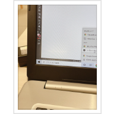

かわせみのページ
レーザーカッターを使って
試作
まず、firealpacaというアプリで下書きをしました。
MDFという素材を使ってレーザーカット
firealpacaで書いたイラストをillustratorの入っているPCにUSB経由で入れ、
illustratorのアプリ内左端の開くを押して画像を読み込む
画像トレースを行い、拡張ボタンを押してパスに変換する。
パスというのは、図形を構成する要素のことでillustrator内でパスに変換することで図形（イラスト）をいじれるようになります。
ここでパスにしておかないと、図形（イラスト）をのキャンバスの余白がそのまま表示されてしまい、いじれない。
次に、ドラッグで図形（イラスト）を囲い、レイヤーで塗り（彫刻）と線（カット）の調整をする。
RGB（225,0,0）にして 線のレーザーを0,001ptにする。

見えにくいが、画像の白四角は、罰。黒四角のふちを赤にする。
いざ、カメ出力！
カメ出力成功!
二個目の作品
赤エイ、クエ、コブダイ、ドチザメのAKKDを作品にしたいと思い作りました。
イラストはこんな感じです。
いざ、AKKD出力！
細かい彫刻まで綺麗にできたので自分の中では満足できるものになりました。
今回の反省と感想
一度彫刻に失敗してしまったのですが、レーザーカッターを使うときに素材を選び終わってから、画面をダブルクリックすると
彫刻とカットの時間が表示されるので必ず確認してからスタートした方が良いです。
線の時間が０になっていたりしたらおかしいので設定を見直ししましょう。
続いて、今回レーザーカッターを使って物を作った感想です。
自分は立体の設計が苦手なので、好きでよくやっているイラストを活かした平面の作品にしました。
デザイン性を意識して魚がわんさか集まっている感じにしました(笑)
今後立体の作品にもチャレンジしたいです。